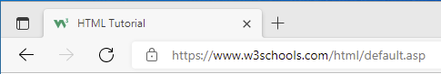

How To Add a Favicon in HTML You can use any image you like as your favicon. You can also create your own favicon on sites like https://www.favicon.cc.
Tip: A favicon is a small image, so it should be a simple image with high contrast.
A favicon image is displayed to the left of the page title in the browser tab, like this:
